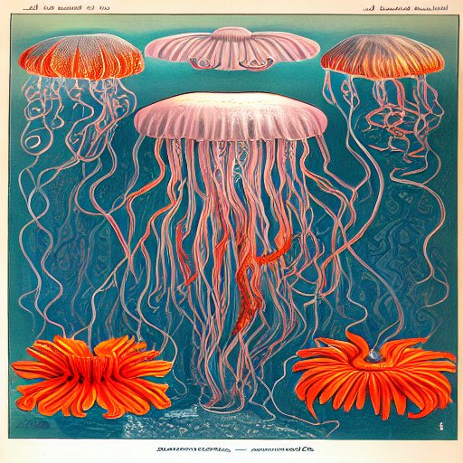
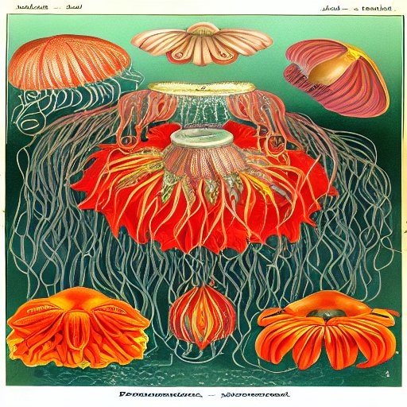
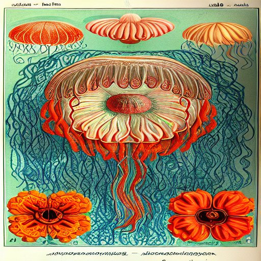
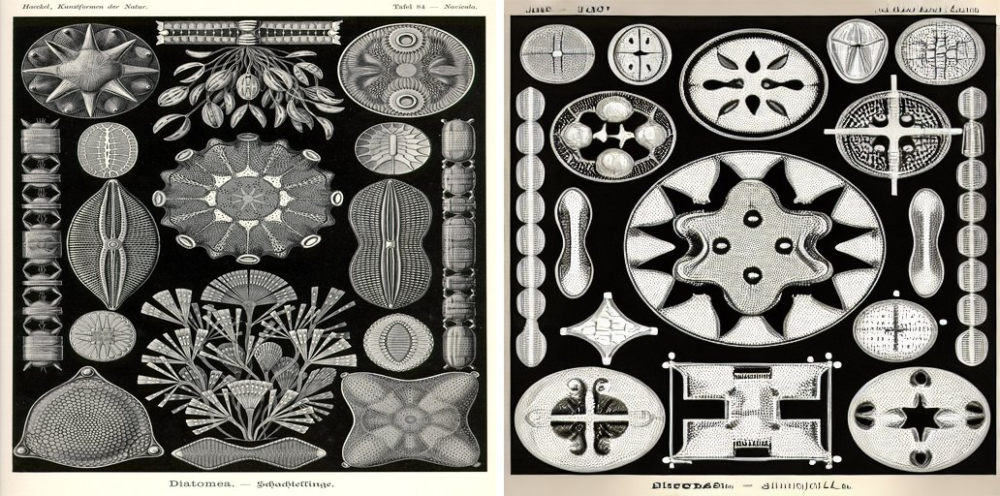
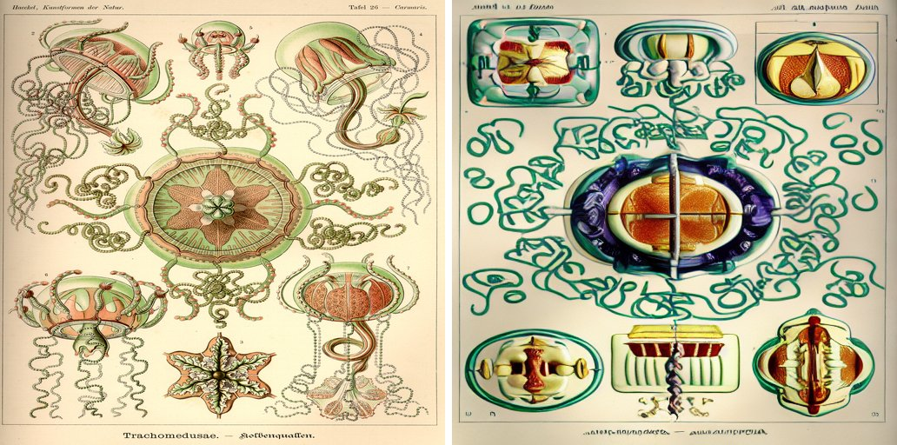
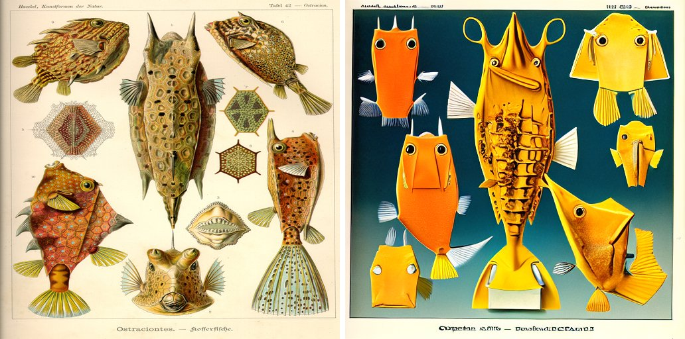

A LoRA fine-tune trained on all 100 plates of Kunstformen der Natur (1899–1904),
exploring what a small, tight visual domain teaches a generative model that a broad one
can't — and whether it can dream up specimens Haeckel never drew, in a style he'd
recognize as his own.
Research in progress — extended training complete, background-color caption fix applied, genus-specific structural fidelity still open
Kunstformen der Natur is public domain, ~100 plates, and every plate follows the
same recipe: one or more biological specimens, often radially symmetric, arranged in a
multi-panel grid and rendered as a lithograph with fine line work and saturated ink — on
either a pale cream or a stark black background, split roughly evenly across the set (52
black, 48 pale, measured directly from the scans, not eyeballed). That signature is strong
enough that an output either looks like Haeckel or obviously doesn't — which makes a
model's progress genuinely inspectable rather than a vibes-based "looks cool to me" call.
Haeckel was also drawing things — deep-sea radiolaria, siphonophores — that nobody had seen
in this kind of detail before. A model that interpolates between plates should produce
specimens that don't exist but feel like they could: a version of what Haeckel was doing a
century earlier, only now the "field notes" are weights instead of microscope slides.
How it's built
The pipeline
✓
Scrape — 100 plates + cover
300dpi scans from the Internet Archive / BioLib.de source, verified complete: no missing or corrupt files.
✓
Deduplicate
Perceptual hashing across all 100 plates. Zero near-duplicates — expected, since these are 100 distinct illustrations, not a scraped photo corpus.
✓
Caption
Every plate's own printed genus, order, and German name transcribed directly off the plate — more accurate than the ~51% Wikimedia Commons categorizes, and one of those is outright wrong.
✓
Full per-figure documentation
1,102 individual specimens documented from Haeckel's own companion explanatory volume — a genuinely bug-prone pipeline (OCR page-boundary bugs, two caught LLM-fabrication incidents) with an honest incident writeup in the repo.
✓
Training script
Rank-16 LoRA on SD1.5's UNet cross-attention (to_q/to_k/to_v/to_out.0), designed around a real 6GB VRAM ceiling: bf16 autocast, gradient checkpointing, batch size 1 + gradient accumulation.
✓
Training run — 124 epochs, 3,100 steps
Started as a 50-epoch probe, kept running well past that point. Loss dropped for the first ~50 epochs, then plateaued — the extra 74 epochs bought almost nothing further on the loss curve. Results below.
✓
Evaluation script
Fixed, seeded prompt sets — faithfulness (real captions vs. generated, side-by-side) and novel recombinations — so results are comparable across checkpoints.
✓
Background-color caption fix
The full eval surfaced a real bug: captions never mentioned background color, so the model guessed. Fixed by measuring each plate's actual background from its pixels and adding it to the caption — see "Chasing a bias" below for the honest result.
○
Genus-specific structural fidelity
Style and layout converge well before order-specific anatomy does — a jellyfish prompt can still render as an abstract, non-jellyfish shape. Open problem, not yet attempted.
The source material
A sample of the 100 plates
Haeckel drew far beyond radiolaria and jellyfish — bats, hummingbirds, orchids, antelope. The dataset's breadth is part of what makes the training run below interesting: 100 images spread across ~90 distinct taxonomic orders is a hard generalization problem.
Same prompt, same seed, sampled at checkpoints across the full run. Style and layout converge early; the honest finding of this run is that it plateaus, not that it keeps improving forever.
step 750

step 1500

step 2250

step 3000
Training loss, per-epoch mean
0.188 → ~0.15, flat from ~epoch 50 on across all 124 epochs.
Diffusion MSE loss is inherently noisy per-timestep — this is the honest per-epoch curve,
not smoothed to look cleaner than it is. It drops for the first third of the run, then
plateaus for the remaining two-thirds — more epochs on this same 100-image dataset
stopped buying anything.
Chasing a bias, and calling it
The full eval (below) found the model frequently generated the wrong background color for a
given plate — and the root cause was simple: captions never mentioned background color at
all, so there was nothing to learn it from. Fixed that by measuring each plate's real
background directly from its pixels (median luminance of a central crop, not guessed) and
adding a black background / pale background tag to every caption.
The fix worked on some plates immediately and not on others. A follow-up run that doubled
how often pale-background examples appeared in training, for 40 more epochs, didn't
change the aggregate result at all — one plate flipped from wrong to right, another flipped
from right to wrong, net zero. A handful of aquatic subjects (siphonophores, boxfish)
consistently render with a teal background regardless of the caption tag, which looks like
the model has learned "aquatic subject → teal" as a stronger association than the literal
instruction. Two rounds of "more epochs, same approach" produced no further gain, so this
is where it stands: real, partial, well-understood progress rather than a solved problem —
and for this project's actual goal (novel specimens, not a photocopier), background-color
drift reads as more of the same generative variety Haeckel's own plates already have, not
a defect to keep burning GPU hours on.
Evaluation
Where it's faithful, where it invents
Real plate on the left, generated image on the right, from the exact same caption the model trained on.

Tafel 84 — Navicula, Diatomea. A genuine win: correct black background, correct multi-panel grid of geometric diatom shells, close enough to pass at a glance. Style, layout, and the background-color fix are all working together here.

Tafel 26 — Carmaris, Trachomedusae (jellyfish). The nuanced case: the background-color fix worked here — pale background, correctly — but the jellyfish itself rendered as an abstract, cage-like structure rather than anything jellyfish-shaped. Background color and genus-specific anatomy are separate problems, solved on separate timelines.

Tafel 42 — Ostracion, Ostraciontes (boxfish). The honest miss: caption says "pale background," output is teal, and two separate rounds of fine-tuning (including one that specifically doubled pale-example exposure) didn't move it. Aquatic subjects seem to have "teal" baked in stronger than the literal instruction.
Read honestly: this is the eval script doing its job, not a disappointing result being
hidden. Style and layout converge fast and hold up well; genus-specific anatomy and a
handful of stubborn background-color associations are the real remaining gaps, and more
epochs on the same 100-image dataset has stopped moving either one. Worth revisiting with a
different approach (caption structure, learning rate, or just more/different training data)
rather than more of the same.
Novel recombinations
Prompts that don't exist in the training set — a genus invented within a known order, or two orders blended. No ground truth to compare against; the question is plausibility, not accuracy.
Scrape, dedup, caption — fully reproducible from scratch
1,102-figure documentation from Haeckel's own explanatory text
LoRA training script, verified end-to-end on the real GPU
124-epoch training run — loss plateaus around epoch 50, confirmed rather than assumed
Full evaluation report against real checkpoints (not a smoke test)
Background-color caption fix, traced to root cause and measured, not guessed
Not started / accepted as-is
Genus-specific structural fidelity (e.g. a jellyfish prompt rendering as an abstract non-jellyfish shape) — a separate, harder problem than background color, still open
Further background-color chasing — two rounds of more-epochs produced no net gain; treated as an accepted, understood limitation rather than a target for more compute
Companion project: Haeckel's Mistakes — comparing this adapter against one trained on Haeckel's earlier 1887 Challenger Report drawings, to isolate the idealization between the two